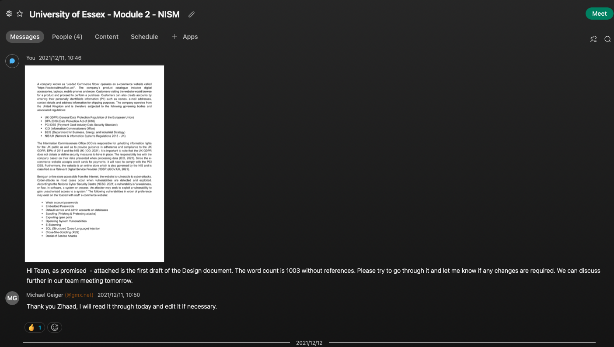

Project Work

Development Team Project: Design Document
Group 1 was assigned an e-commerce website called "loadedwithstuff.co.uk", the task was as follows:
You will need to initially submit a design document to your client which covers the following requirements. Note that the associated grading criteria are highlighted in the requirements below, to be reviewed alongside the criteria grid (Module Resources).
- Identify the appropriate governing body and associated regulations that apply to your assigned site (consider who will use it, the kind of information it contains/ displays, the industry it belongs to and the functionality it offers). (Knowledge and Understanding weighted at 25%)
- Create a list of possible security vulnerabilities, as determined by the regulations identified above. (Application of Knowledge weighted at 25%)
- Create a summary list of recommendations and potential mitigations that could be used to ameliorate the risks you identified. Note that these are theoretical risks, there is no requirement to perform any scans or tests on the site at this time. These should be ordered by the level of potential risk to the organisation that could (or would) own the site. (Criticality weighted at 25%)
Word limit – 1000 words
Checklist for the assignment
- Bulleted list of appropriate governing bodies and regulations you believe apply to the assigned website
- Shortlist of the intended audience, potential information that may be held, the industry (which may affect the sensitivity of the data), and the functionality
- A bulleted list of potential vulnerabilities based on the regulations (based on framework analysis)
- Tabular summary of recommendations & mitigations, based on theoretical assessments and ordered by business priority
- Remember to check your presentation, spelling, and structure (proofreading is a good idea).
Individual Contributions
My individual contribution for the design document was creating the final table used as well as compiling the final document
Click here to download the final table used in a MS Excel format
The screenshot below provides evidence that the first draft was completed and sent to the team for further review and comments:
Final Design Document
The final design document can be viewed by clicking on the link below:
Click here to download the final design document in a .pdf format
Tutor Feedback
Thank you for submitting your development team project: Design Document.
Please see your feedback below:
Please be aware that the grade may change due to the moderation and adjustment process.
Knowledge and understanding of the topic/issues under consideration (25%):You have provided a good level of knowledge & understanding through the selection of regulations that you have listed. There is some explanation of the relevance of these to your allocated website. You have discussed further the ICO and mentioned GDPR and DPA regulations.
Merit Achieved
Criticality (25%):Very good use of references to support the list of recommendations /mitigations you have provided. You have also ordered these by the level of potential risk to the organisation in a clear format. Your summary of the recommendations in the table provides some relevant additional information to justify the tools you have suggested to use.
Excellent-Distinction Achieved
Application of knowledge and understanding (25%):Very good demonstration of the application of knowledge – particularly strong around the table provided. You have clearly specified the security vulnerabilities and the various threats that are apparent. You have made some referral to the NCSC etc. that these vulnerabilities were relevant to.
Excellent-Distinction Achieved
Structure and presentation (25%):A well-organised report with the sections clearly addressed. You have included a brief introduction to start off the report. Good selection of references, suitably formatted to add depth to your analysis. Spelling and grammar is good throughout.
Excellent-Distinction Achieved
Development Team Project: Executive Summary
To carry out this part of the assignment the team should select a number of vulnerability scanning tools (as reviewed during the module) and use them to test for and detect the (potential) vulnerabilities listed in part 1 (unit 6). Ensure you take account of the feedback you have received for the Unit 6 submission. Your team should produce an executive summary that pulls together your findings, recommendations, and conclusions in a clear and unambiguous format. It should consist of:
- A brief summary of the work carried out (tools used (with justifications - (i.e. why did you chose a specific tool), tests carried out, summarised results). Justifications should use academic sources for support. (Knowledge and Understanding weighted at 10%, Use of relevant sources weighted at 10%).
- Summary findings – presented in an easy-to-understand, non-technical manner (supported by graphics and charts as appropriate). (Knowledge and Understanding weighted at 10%).
- A discussion of any vulnerabilities discovered and explanations of why expected vulnerabilities were not detected. (Criticality weighted at 20%, Use of relevant sources weighted at 5%.)
- Conclusions and recommendations - i.e. how the site owner could improve the site security – with justifications. Recommendations should be ordered by business priority. (Knowledge and Understanding weighted at 10%, Criticality weighted at 10%, Use of relevant sources weighted at 5%).
Presentation and Structure of your findings (weighted at 10%) includes spelling, organisation, as well as evidence of proofreading. You will also be assessed on the correct use (and format) of citations and references in your work (Academic Integrity weighted at 10%).
Word limit – 2000 words
Checklist for the assignment
- Tabulated summary of the work carried out with tools used, justification for tool selection, tests carried out and results (with graphs if appropriate).
- Analysis of results, supported by charts and graphs as appropriate.
- Discussion of key vulnerabilities, comparison with the initial report, explanation of differences and omissions.
- Conclusions and recommendations for improvements/ mitigations ordered by business priority.
- Remember to check your presentation, spelling, and structure (proofreading is a good idea).
Individual Contributions
My individual contribution for the Executive Summary document was creating the structure of the document, this inlcuded the various sections i.e. Objectives, Methodology, Assumptions, Results and Recommendations. Furthermore I had created Table 1 & Table 2 of the results sections as well as the Recommendations section.
Click here to download the Executive Summary document in a MS Excel formatClick here to download the final recommendations in Powerpoint format
Final Executive Summary Document
The final Executive Summary document can be viewed by clicking on the link below:
Click here to download the final design document in a .pdf format
Tutor Feedback
Add Tutor Feedback Here - Not available at the time of writing